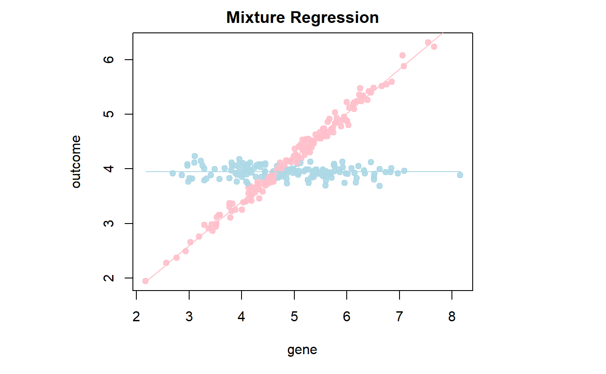
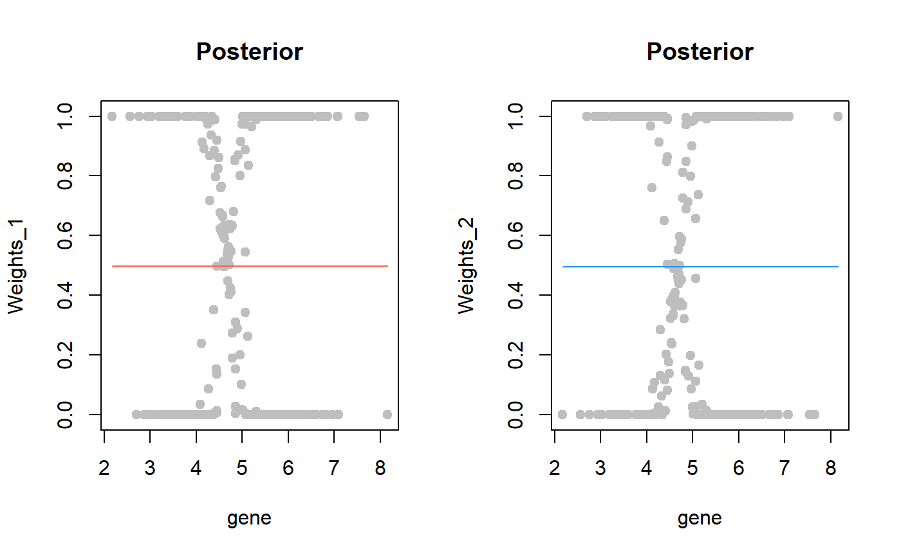
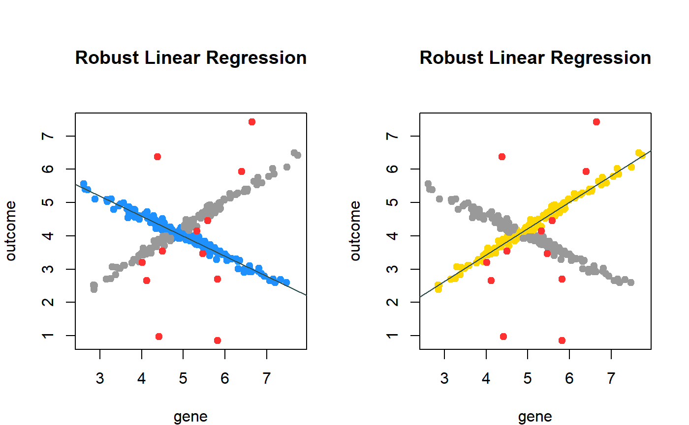
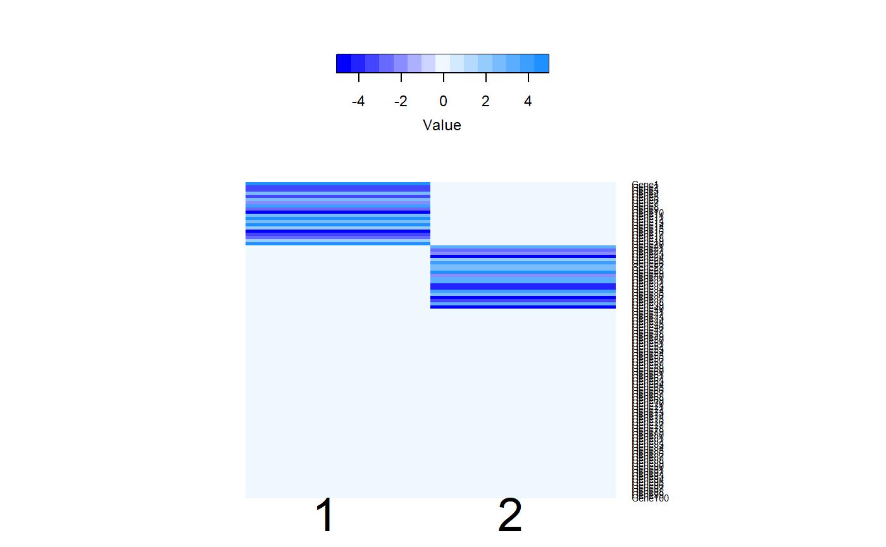
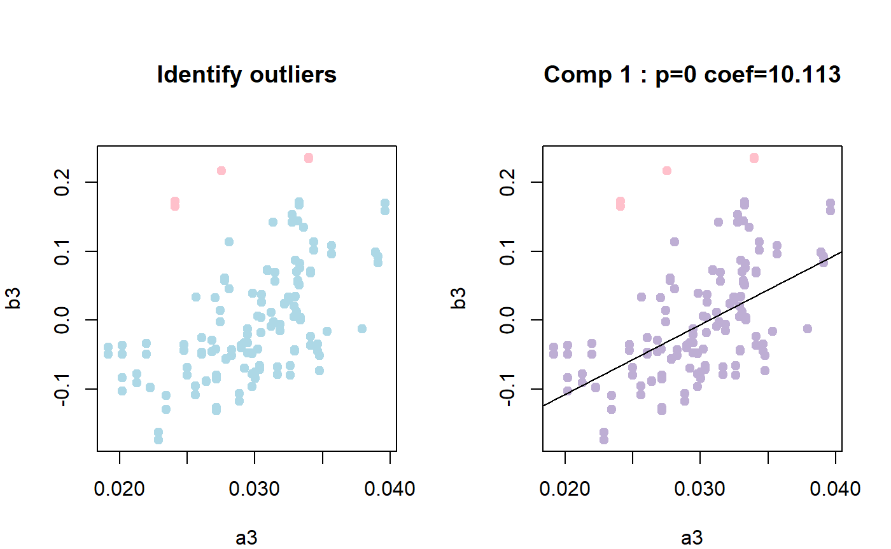
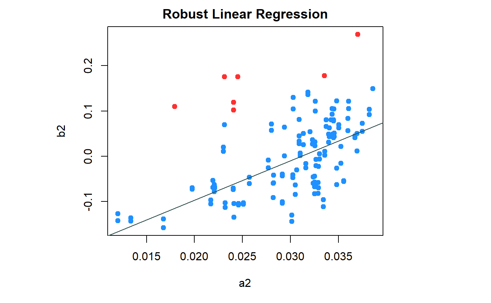
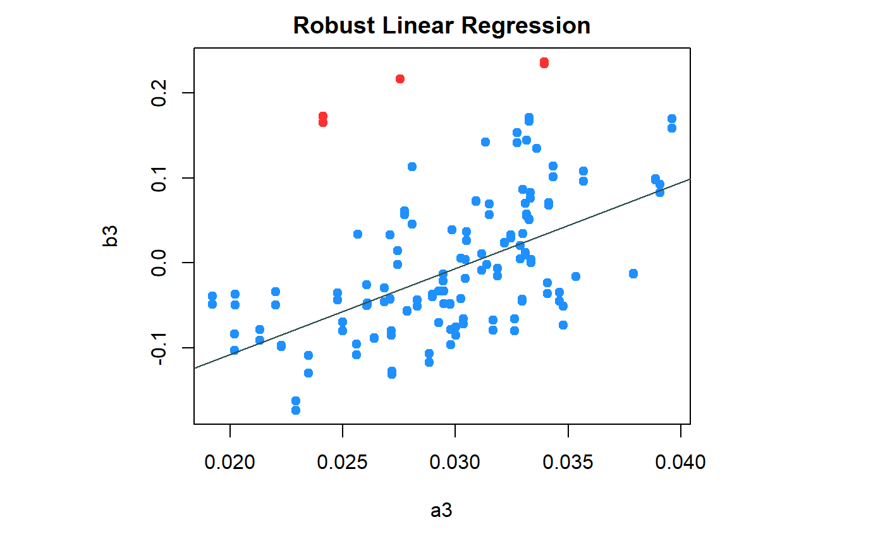
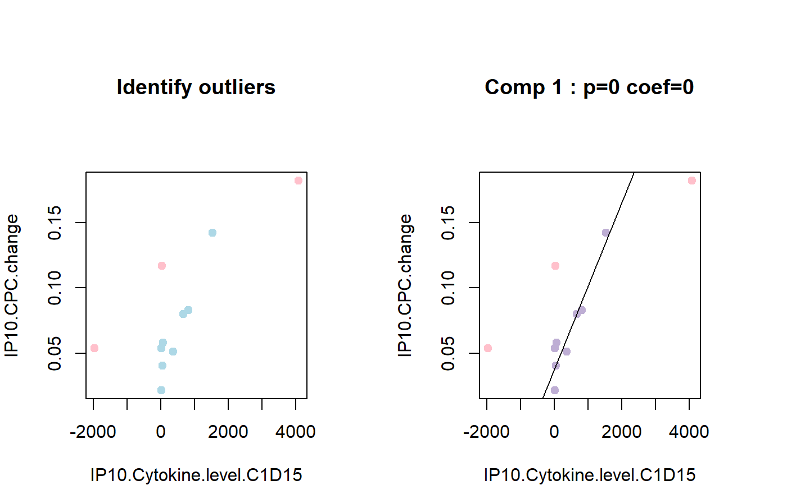
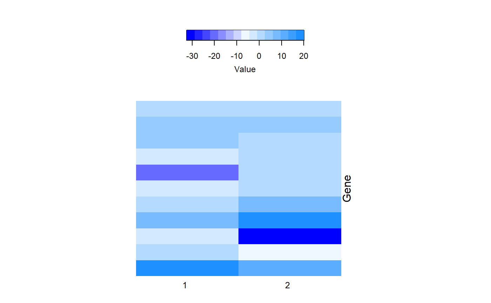
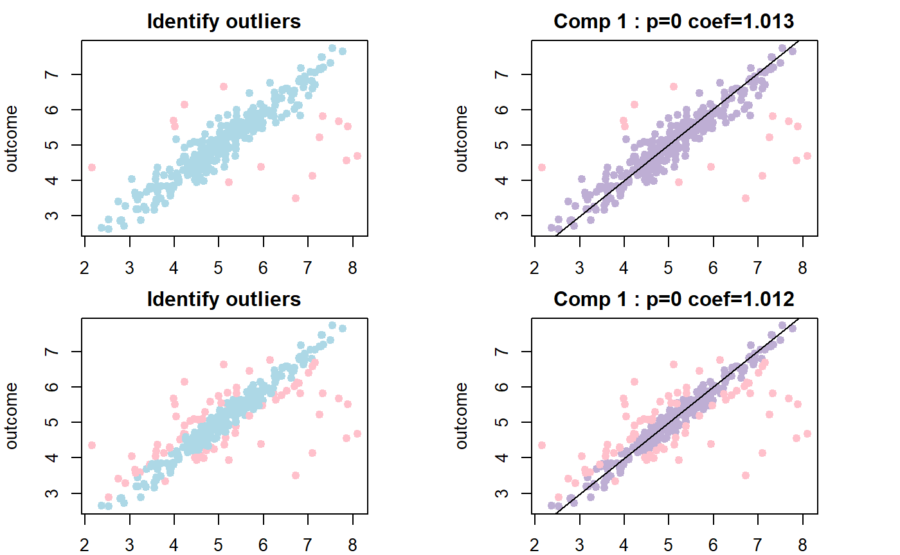

Mining the Latent Relationship among Variables using Mixture Model – Supplementary Materials
Wennan Chang
Chi Zhang*
Sha Cao*
Source:vignettes/tutorial.Rmd
tutorial.RmdS1. Introduction
The Patient outcome variable is essential to assessment the clinical therapy and discovery the un-derlying mechanism of the disease. Mixture regression model is a statistic approach to untangle the heterogeneity of the samples. However, the traditional EM algorithm solution is non-robustness and incredible due to the following challenges: 1) the existence of the outliers and non-response samples, 2) the high dimensional of the independent variable. Here, we develop two methods and R package RobMixReg, which provide a comprehensive solution to detect the outlier and estimate the parameter of mixture model simultaneously.
Here, we develop R package RobMixReg to provide a compre-hensive solution to mining the latent relationship among the varia-bles. The major contribution of RobMixReg lie in the following key aspects: 1) For low dimension variable, proposing a novel method to detect the outlier and estimate the parameter of FGMR as the same time; 2) For high dimensional variables, integrating a supervised clustering algorithm which detect the subgroup of sam-ple and select contributed genes simultaneously; 3) providing flex-ible and comprehensive solutions which cover all situation of mixture regression model for mining latent relationship between variables.
S2. Case Studies
S2.0 Preparation: Install the RobMixReg Package
The RobMixReg package was publised on CRAN.
#install.packages('RobMixReg') library(RobMixReg)
The RobMixReg package also has the most updated version on github.
#library("devtools")
#devtools::install_github("changwn/RobMixReg")S2.1 Example 1: Low dimension, \(K=1\) with outlier
Linear regression is the classical model to explorer the relationship between two variables (e.g. gene and patient outcome). However, general linear model is very unstable when there are outliers caused by measurement error or patient internal heterogeneity. To deal with this problem, robust mixture regression became a common way during the statistic analysis (e,g. drug sensitivity prediction et al.). The example 1 simulate the situation which contains a single regression line and several outliers. The implemented algorithm is Least Trimmed Squares Robust Regression (see Table 1 in maintext).
- Mathmatical Model
\[ \left\{ \begin{array}{rcl} | y_i - \beta_1 x_i - \beta_0 | \leq \eta & \mbox{if} & (x_i, y_i) \in regression \ line \\ | y_i - \beta_1 x_i - \beta_0 | > \eta & \mbox{if} & (x_i, y_i) \ is \ outlier \\ \end{array}\right. \]
Data Simulation:
In this section, we introduce the data generation process. The goal of simulation is to generate single regression line and several outliers. The independent variable gene is a vector and its length is 300. \(gene \sim N(5,1)\).The coefficient is controled by variable slope and intercept is controled by variable inter. The generation of dependent variable consist of two steps. Firstly, generate a strict regression line based on formula \(y_i = \beta x_i + \beta_0\). Then, the Gaussian white noise, \(\epsilon \sim N(0,0.1^2)\),added to the line. Thus, the least square regression line is \(y_i = \beta x_i + \beta_0 + \epsilon\). In order to adding the outliers, we sample the index of all data point and select 10% percentage of all points as outliers. Huge variation was added to the line to mimic the outliers caused by measurement error et al. The huge variation from another normal distribution which is \(\eta \sim N(0,2^2)\).
# set the seed for randomization set.seed(12345) gene = rnorm(n=300, mean=5, sd=1) inter = 1 ; slope = 0.8 outcome = slope * gene + inter outcome = outcome + rnorm(n=length(outcome),mean=0, sd=0.3) # add the outliers # 10% of variable should be outliers, user can customize the percentage id_outlier = sample(1:length(outcome), size = 0.1*length(outcome)) outcome[id_outlier] = outcome[id_outlier] + rnorm(length(id_outlier), mean=0,sd=2) gene.example1 = gene; outcome.example1 = outcome;
All methods mentioned in the paper were integrated in the package in a very user-freindly way. If the user want to perform the robust regression in example 1. The user can run the Least Trimmed Saured Robust Regression by just calling MLM main function and setting the ml.method parameter as ‘a’.
res.a = MLM(ml.method='a', outcome, gene)
Once we get the result from the method 1, we can extract the sample information that which sample should be a outlier or not.
## [1] 14 16 23 43 46 49 69 91 96 101 131 144 198 205 215 226 276 278 282
## [20] 283 290The RobMixReg package has a plotting module for visualization in a easy way. For the example 1, we draw all data point and color them based on whether it is a outlier. Then, we also print another figure which contains the fitted regression line and metric (coeffient and related significant p value). The label of x and y axis based on the letter in the foumula. Thus, user can customize the x and y axis label.
inds_in = which(res.a$lts.wt == 1) # set the figure format and margin par(mfrow=c(1,1),mar = c(5, 8, 2, 8)) # use plot module to draw the data points and the regression line. plot_CTLE(outcome~gene,data=data.frame(gene,outcome),nc=1,inds_in=inds_in)

The ratio of the outlier is an important parameter during the fitting, the integrated algorithm allow the user set the value of ratio. The detailed example provided as section 4 which demonstrate how to change the tRatio parameter and plot result.
S2.2 Example 2: Low dimension, \(K \geq 2\) without outlier
The relationship between gene expression and patient outcome is complex. Besides the outlier problem, the heterogeneity among the subject is also a challenge. Due to subgroup patient may behave similar property. Mixture model (e.g. mixture regression line) were widely used in real application. However, to the best of our knowledge, there is no package provide a flexible mixture regression modeling expet the ‘mixtureReg’ (see maintext reference). The RobMixReg package modified and optimized the several functions in ‘mixtureReg’ which meet the publish requirement of CRAN.
- Mathmatical Model
\[ y_i = \beta_k x_i + \beta_{k0} + \epsilon_{ki}, \] where \[ \epsilon_{ki} \sim N(0,\sigma_k^2),k=1,2; i=1,...,n. \]
Data Simulation:
To demonstrate flexible mixture regression model, we simulated two lines through below script. The user can change the two coefficient parameter by setting the slope1 and slope2. Also, two intercepts controlled by inter1 and inter2. The Gaussian white noisy added to two lines form a normal distribution as \(\epsilon_{ki} \sim N(0,0,1^2)\). For giving a balanced number of mixture model, we selected odd position data points as the first regression line and even position data point as the second regression line.
set.seed(12345) gene = rnorm(n=300, mean=5, sd=1) outcome = rep(0, length(gene)) slope1 = 0.8; inter1 = 0.2; slope2 = -0.01; inter2 = 4 n <- length(gene) outcome[seq(n) %% 2 == 1] = slope1 * gene[seq(n) %% 2 == 1] + inter1 outcome[seq(n) %% 2 == 1] = outcome[seq(n) %% 2 == 1] + rnorm(length(outcome)/2,mean=0,sd=0.1) outcome[seq(n) %% 2 == 0] = slope2 * gene[seq(n) %% 2 == 0] + inter2 outcome[seq(n) %% 2 == 0] = outcome[seq(n) %% 2 == 0] + rnorm(length(outcome)/2,mean=0,sd=0.1) gene.example2 = gene; outcome.example2 = outcome;
The package own the capability of fitting flexible mixture regression. User can customize the several regression format by setting the b.formulaList parameter.
res.b = MLM(ml.method='b', gene, outcome, b.formulaList = list(formula(outcome ~ gene),formula(outcome ~ 1)))
## diff = -3.691596e-09
## iter = 14
## restart = 0
## log-likelihood = 90.17514The plot function provide the two modules for the example 2. The first modele will draw two mixture regression lines with different color.
par(mar = c(5, 8, 2, 8)) plot_mixtureReg(res.b, which = 1)

The second module give the posterior for each data point. The pposterior decide which data point belong to which regression line in mixture model. In both figures, some data points around 5 have low prior because the intersection point is around 5 show as the last figure. It means it is difficult to cluster the point near the intersection point of two lines.
par(mfrow=c(1,2)) plot_mixtureReg(res.b, which = 2)

S2.3 Example 3: Low dimension, \(K \geq 2\) with outlier
As described in last two examples, we explorer the outlier and heterogeneity among the patient. In this example 3, we will demonstrate using our in-house algorithm CAT to detect the outlier and estimate the parameter of mixture model simultaneously.
- Mathmatical Model
\[ \left\{ \begin{array}{rcl} | y_i - \beta_k x_i - \beta_{k0} | \leq \eta & \mbox{if} & (x_i, y_i) \in regression \ line \\ | y_i - \beta_k x_i - \beta_{k0} | \leq \eta & \mbox{if} & (x_i, y_i) \ is \ outlier \\ \end{array}\right. \]
Data Simulation:
The simulation of example 3 combines the process of example 1 and example 2. Two regression lines can be customized by setting the coefficient and intercept parameter. The outliers were selected randomly and the number of outlier is controlled by parameter size.
set.seed(12345) gene = rnorm(n=300, mean=5, sd=1) outcome = rep(0, length(gene)) slope1 = 0.8; inter1 = 0.2; slope2 = -0.6; inter2 = 7 n <- length(gene) outcome[seq(n) %% 2 == 1] = slope1 * gene[seq(n) %% 2 == 1] + inter1 outcome[seq(n) %% 2 == 1] = outcome[seq(n) %% 2 == 1] + rnorm(length(outcome)/2,mean=0,sd=0.1) outcome[seq(n) %% 2 == 0] = slope2 * gene[seq(n) %% 2 == 0] + inter2 outcome[seq(n) %% 2 == 0] = outcome[seq(n) %% 2 == 0] + rnorm(length(outcome)/2,mean=0,sd=0.1) # The size parameter control the number of outliers during simulation. id_outlier = sample(1:length(outcome), size = 10) outcome[id_outlier] = outcome[id_outlier] + rnorm(length(id_outlier), mean=0,sd=2) gene.example3 = gene; outcome.example3 = outcome;
Run the Component-wise Adaptive Trimming method to detect outlier and estimate the parameter simultaneously.
res.c = MLM(ml.method="c", gene, outcome)
Extract the outlier information and plot the mixture regression line one by one.
inds_in=res.c@inds_in par(mfrow=c(1,2),mar = c(4, 4, 6, 2)) plot_CTLE(outcome~gene,data.frame(gene,outcome),nc=2,inds_in=inds_in)

The ratio of the outlier is an important parameter during the fitting, the integrated algorithm allow the user set the value of ratio. The detailed example provided as section 4 which demonstrate how to change the tRatio parameter and plot result.
S2.4 Example 4: High dimension, \(K \geq 2\)
The gene expression data is usually in high dimension. Only modeling the relationship between two vectors is not enough. For example, alternatively actived genes or pathways in different patient subpopulation subtantially hurdled the computational capability in studying the disease complexities and optimizing therapeutic strategy, which is fundamental question in precision health study. The set of genes used to execute a biological pathway of clinical response may very likely exist in more than one alternative form, thus lead to patient subpopulation exhibiting varied level of sensitivity and clinical response different cytotoxic drugs, posing a challenge in identifying gene features that are predictive for clinical response to existing but unknown patient subpopulation. Thus, we proposed the RBSL algorithm, following the supervised methods, to enable the identification of subsets genes. The detailed motivation and algorithm please refer to the RBSL paper.
- Mathmatical Model
\[ argmin || y_{J_K} - X^T_{:,J_k} \beta_k - \beta_{k0} ||,s.t. ||\beta_k || \leq \lambda_k \]
Data Simulation:
In total, we simulate a matrix which is 400 patients by 100 genes. The first twenty genes contributed to the first 200 patients. The continued twenty genes contributed to the last 200 patients. The simulation process is simply executed by a function simu_data_sparse, please see the package manual for more details.
set.seed(12345) n=400 bet1=bet2=rep(0,101) bet1[2:21]=sign(runif(20,-1,1))*runif(20,2,5) bet2[22:41]=sign(runif(20,-1,1))*runif(20,2,5) bet=rbind(bet1,bet2) pr=c(1,1)*0.5 sigs=c(1,1)####need to loop through 0.5, 1, 2 tmp_list = simu_data_sparse(n=n,bet=bet,pr=pr,sigma=sigs) nit=1 nc=2 max_iter=50 x=tmp_list$x print("Dimension of matrix (x):");dim(x)
## [1] "Dimension of matrix (x):"## [1] 400 100## [1] "Length of outcome variable (y):"## [1] 400Run the RBSL method to identify the subspaces on which subsets of genes are explainable to the patient outcome variable. The parameter x is a high dimensional matrix and parameter y is the patient outcome variable.
res.d = MLM(ml.method = 'd',x=x,y=y) # The result of the RBSL algorithm consist of 5 objects. names(res.d)
## [1] "coffs" "clus" "x" "y" "yhat"Plot the predicted coefficient matrix. The column is the cluster membership and the row is the each cluster’s coefficient value of genes.
#par(mfrow=c(1,1),mar = c(0.1, 0.1, 0.1, 0.1)) blockMap(res.d)

S2.5 Model Selection
Although the package provide the three methods for the low dimension data, it is difficult to choose which model to use when the user don’t know the pattern of their data. Thus, the package provide a function to assist user choose the model by calculating the likelihood of three methods.
First, we use the simulated data in example 1. The underlying pattern is one linear regression line plus some outliers. The vali_model function test the three methods independently, calculate the likelihood of the fitting to linear line or white gaussian noise. Then, Bayesian information criterion was provided for three methods as BIC1,BIC2,BIC3. As below result, the second method havs lowest BIC which means a good model. However, we should choose the simple model, lower order model, as Occam’s razor rule. In addition, the strengh of the evidence against the model with the higher BIC value can be summarized as below.
| \(\Delta\)BIC | Evidence against higher BIC |
|---|---|
| 0 to 2 | Not worth more than a bare mention |
| 2 to 6 | Positive |
| 6 to 10 | Strong |
| > 10 | Very strong |
vali_model(outcome.example1, gene.example1)
## [1] "BIC1=28.720886976674"
## [1] "BIC2=28.5215104329108"Thus, we should choose model 1 since the model 1 is a simpler model and the BIC value is very close to BIC2.
The simulated data in example 2 provide two linear regression lines without any outlier. The below BIC value indicate the best model is model 2.
vali_model(outcome.example2, gene.example2)
## [1] "BIC1=28.1901327690938"
## [1] "BIC2=26.2025457259408"
## [1] "BIC3=25.9974617378105"In the example 3, the simulated data have the pattern including two linear regression line and some outliers. The below BIC value indicate the best model is model 3.
vali_model(outcome.example3, gene.example3)
## [1] "BIC1=28.541278235534"
## [1] "BIC2=28.0553267996404"
## [1] "BIC3=26.274195626551"S3. Real Data Application
S3.1 Breast Cancer Multi-Omics Data Filtered Outlier Mutually
Expression value of the cell type marker genes is an important evidence to validate the activity of the target cell type. Also, the cell type marker genes are critical to calculate the cell type proportion in each sample. Meanwhile, the marker genes are varied in RNA-seq data and ATAC-seq data due to the technology and measurement. Thus, integrating useful information from two types of data can not only improve the accuracy of the proportion prediction. but also enable us to exploer the cell type activity in the tumor microenvironment.
However, the outliers in each data type are difficult to remove and obstruct the downstream analysis. Two types of sequcing data have the enough information and we give the example to detect the ourlier based on multi-omic data mutually.
How we extract information from RNA-seq and ATAC-seq data.
# read the list object built-in the package list('BRCA_source')
## [[1]]
## [1] "BRCA_source"data_RNAseq_selected = BRCA_source$data_RNAseq_selected data_ATACseq_selected = BRCA_source$data_ATACseq_selected RNAseq_marker = BRCA_source$RNAseq_marker ATACseq_marker = BRCA_source$ATACseq_marker # print the RNA-seq marker genes for three cell types print(RNAseq_marker)
## $`T cell`
## [1] "CD3E" "LCK" "CD247" "CD3D" "CD3G" "CXCR3" "SIT1"
## [8] "CD5" "SIRPG" "UBASH3A"
##
## $Fibroblast
## [1] "COL1A2" "COL5A2" "COL3A1" "COL1A1" "COL5A1" "COL6A3" "FBN1" "SPARC"
## [9] "POSTN" "AEBP1"
##
## $`MHC class II antigen presenting cells`
## [1] "HLA-DRA" "HLA-DPB1" "HLA-DMB" "CD74" "HLA-DMA" "HLA-DRB1" "HLA-DPA1"
## [8] "SELPLG"# For ATAC-seq, we also select same cell types names(ATACseq_marker)
## [1] "T cell"
## [2] "Fibroblast"
## [3] "MHC class II antigen presenting cells"# We use top row space to represent the cell type proportion in each sample b4_TCGA<-Compute_Rbase_SVD(data_RNAseq_selected,RNAseq_marker) b4_ATAC0<-Compute_Rbase_SVD(data_ATACseq_selected,ATACseq_marker) # generate the RNA-seq and ATAC-seq variable below. # T cell a1<-b4_TCGA[1,colnames(b4_ATAC0)] b1<-b4_ATAC0[1,] # Fibroblast a2<-b4_TCGA[2,colnames(b4_ATAC0)] b2<-b4_ATAC0[2,] # MHC antigen presenting cells a3<-b4_TCGA[3,colnames(b4_ATAC0)] b3<-b4_ATAC0[3,]
The results shows the cell types identified from RNA-seq data were also identified in ATAC-seq data. In addition, the cell type proportion in the RNA-seq have a strong correlation with it in the ATAC-seq after remove the outliers.
These variables also provide in another data frame object regardless the section S3.1.
data(BRCA_ATAC_RNA_seq) # First, extract the RNA-seq vectors a1 = BRCA_ATAC_RNA_seq$a1 a2 = BRCA_ATAC_RNA_seq$a2 a3 = BRCA_ATAC_RNA_seq$a3 # Second, extract the ATAC-seq vectors b1 = BRCA_ATAC_RNA_seq$b1 b2 = BRCA_ATAC_RNA_seq$b2 b3 = BRCA_ATAC_RNA_seq$b3
Call the main function to detect the outliers.
brca.1 = MLM(ml.method='c', gene=a1, outcome=b1,nit=10,nc=1) brca.2 = MLM(ml.method='c', gene=a2, outcome=b2,nit=10,nc=1) brca.3 = MLM(ml.method='c', gene=a3, outcome=b3,nit=10,nc=1)
Once we get the result from the method 1, we can extract the sample information that which sample should be a outlier or not.
inds_in = brca.1@inds_in par(mfrow=c(1,1),mar = c(5, 8, 2, 8)) plot_CTLE(b1~a1,data=data.frame(a1,b1),nc=1,inds_in=inds_in)

inds_in = brca.2@inds_in par(mfrow=c(1,1),mar = c(5, 8, 2, 8)) plot_CTLE(b2~a2,data=data.frame(a2,b2),nc=1,inds_in=inds_in)

inds_in = brca.3@inds_in par(mfrow=c(1,1),mar = c(5, 8, 2, 8)) plot_CTLE(b3~a3,data=data.frame(a3,b3),nc=1,inds_in=inds_in)

S3.2 Colon adenocarcinoma disease application
Colon adenocarcinoma is known as a heterogeneous disease with different molecular subtypes. CREB3L1, or cyclic AMP responsive element-binding protein 3-like protein 1, is an important transcription factor that can suppress cell cycle. The regulation of CREB3L1 is largely accomplished through epigenetic mechanisms in cancer and other disease. We now examine that latent relationship between CREB3L1 and one of its epigenetic regulators, cg16012690, in colon cancer. We collected the gene expression profile of CREB3L1 and the methylation profile of cg16012690 on 299 colon adenocarcinoma patients from the Cancer Genome Atlas (TCGA) cohort.
data(colon_data) gene_expr = colon_data$x methylation = colon_data$y res.colon = MLM(ml.method="c", gene_expr, methylation) inds_in=res.colon@inds_in par(mfrow=c(1,2),mar = c(4, 4, 6, 2)) plot_CTLE(methylation~gene_expr,data.frame(gene_expr,methylation),nc=2,inds_in=inds_in)

We fitted the data using CAT, the two colored line represented the two heterogeneity group of patients. In summary, our method enables the automatic detection of outliers and robust estimation of parameters simultaneously, which is promising in many real application. For more details about the Colon denocarcinoma data analysis, please refer to the paper of algorithm CAT.
S3.3 Subspace clustering on high dimension dataset - ROSMAP application
Alzheimer’s disease (AD) is a common neurodegenerative disease of older age with extensive heterogeneity in its onset and course. Despite over three decades of work, there are currently no treatments for AD, and its pathobiology remains incompletely understood. The consortion profiled samples come from two prospective studies of aging-The Religious order Study (ROS) and the Memory and Aging Project (MAP). The joint dataset refer as the ROSMAP dataset. We use RNA-seq as the high dimension variable and one clinical score ‘Mini Mental State Examination score at last visit’ as the external variable to run the supervised subclustering. The coeffient matrix give us some high interest genes for heterogeneous patients.
The partial ROSMAP dataset was included in the RobMixReg package. The manual of the package has the detailed description of the dataset.
## [1] 100 1282rr = paste('row_', rownames(x), sep='') cc = paste('col_', colnames(x), sep='') rownames(x) = rr colnames(x) = cc y1 = ROSMAP_data$clinical_data$cts_mmse30_lv y1[is.na(y1)] = 0 names(y1) = rownames(x) # suppress the output of warning informaiton sink("nul") ; ROSMAP_res=MLM(ml.method="d",x=x,y=y1,nit=1,nc=2,max_iter=10); sink() ROSMAP_coffs1=ROSMAP_res$coffs # other outputs #ROSMAP_yhat1 = ROSMAP_res$yhat #ROSMAP_clus1=ROSMAP_res$clus #print(cor(ROSMAP_yhat1,y1)) # plot the coefficient matrix ROSMAP_res2 = list() # just print rows (genes) whose coefficient is n ROSMAP_res2$coffs = ROSMAP_coffs1[which(apply(ROSMAP_coffs1,1,sum)!=0),] blockMap(ROSMAP_res2)

Then, we can used these genes for each group of patient to perform downstream analysis.
Appendix. More on Robust Mixture Regression
A.1 Robust mixture regression library
Another important main function in the package named rmr which provide five optional algorithms to fit the robust mixture regression model. The implemented algorithms includes: CTLERob stands for Component-wise adaptive Trimming Likelihood Estimation based mixture regression; mixbi stands for mixture regression based on bi-square estimation; mixLstands for mixture regression based on Laplacian distribution; TLE stands for Trimmed Likelihood Estimation based mixture regression. For more detail of the algorithms, please refer to references in the DESCRIPTION file.
User can select the algorithm by setting the parameter lr.method. One example is below.
| Algorithms | Description | Function |
|---|---|---|
| CAT | Component-wise adaptive Trimming Likelihood Estimation based mixture regression | CTLERob |
| flexmix | Finite mixture models and latent class regression | flexmix |
| TLE | Trimmed Likelihood Estimation based mixture regression | TLE |
| mixbi | Mixture regression based on bi-square estimation | mixbi |
| mixLp | Mixture regression based on Laplacian distribution | mixLp |
CAT Example
For description of gaussData please refer to package manual.
# gaussData x=(gaussData$x);y=as.numeric(gaussData$y); formula01=as.formula("y~x") example_data01=data.frame(x,y) # The CAT algorithm can be called by two ways. # The first way is using 'rmr' main function and declare 'CTLERob' parameter. res_rmr_a = rmr(lr.method='CTLERob', formula=formula01, data=example_data01) # The second way is using the 'MLM' main function and declare 'c' parameter. gene = x;outcome = y res_rmr_b = MLM(ml.method="c", gene, outcome)
A.2 Adjust the trimming ratio for robust regression
set.seed(12345) gene = rnorm(n=300, mean=5, sd=1) inter = 0 ; slope = 1 outcome = slope * gene + inter outcome = outcome + rnorm(n=length(outcome),mean=0, sd=0.3) id_outlier = sample(1:length(outcome), size = 0.1*length(outcome)) outcome[id_outlier] = outcome[id_outlier] + rnorm(length(id_outlier), mean=0,sd=2) # Use tRatio to adjust the ratio of outlier for trimming res_rmr_r1 = rmr(lr.method='TLE', formula=outcome~gene, data=data.frame(outcome,gene),nc=1, tRatio=0.05) inds_in_r1 = res_rmr_r1@inds_in # change tRatio to a larger percentage res_rmr_r2 = rmr(lr.method='TLE', formula=outcome~gene, data=data.frame(outcome,gene),nc=1, tRatio=0.25) inds_in_r2 = res_rmr_r2@inds_in # set the figure format and margin par(mfrow=c(1,2),mar = c(4, 4, 6, 2)) # use plot module to draw the data points and the regression line. plot_CTLE(outcome~gene,data=data.frame(outcome,gene),nc=1,inds_in=inds_in_r1) plot_CTLE(outcome~gene,data=data.frame(outcome,gene),nc=1,inds_in=inds_in_r2)
